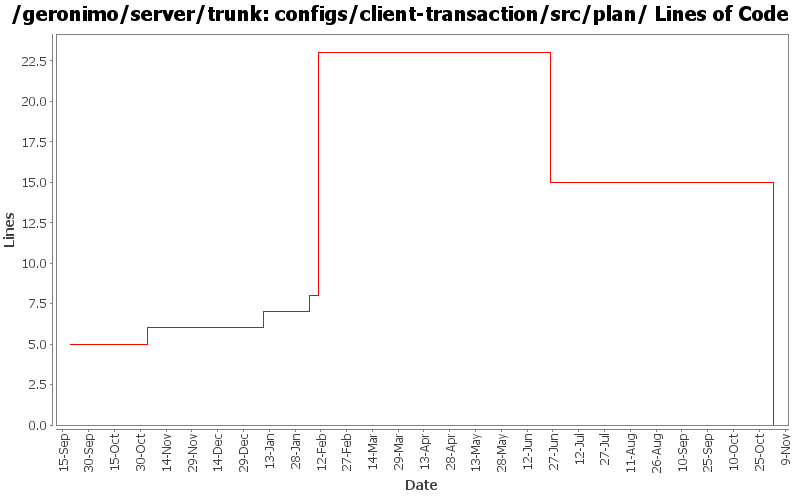

[root]/configs/client-transaction/src/plan

| Author | Changes | Lines of Code | Lines per Change |
|---|---|---|---|
| Totals | 10 (100.0%) | 27 (100.0%) | 2.7 |
| djencks | 5 (50.0%) | 17 (63.0%) | 3.4 |
| jlaskowski | 1 (10.0%) | 6 (22.2%) | 6.0 |
| kevan | 1 (10.0%) | 2 (7.4%) | 2.0 |
| dain | 1 (10.0%) | 1 (3.7%) | 1.0 |
| akulshreshtha | 1 (10.0%) | 1 (3.7%) | 1.0 |
| prasad | 1 (10.0%) | 0 (0.0%) | 0.0 |
GERONIMO-3565. Configs distributed amongst framework/configs and plugins
0 lines of code changed in 1 file:
GERONIMO-3272 eliminate the geronimo-transaction-jta11 module, we are entirely on jta11 now. Also refix logging error for non-NamedXAResource. Also make jpa stuff use spec interfaces and not drag ejb spec into the tm
1 lines of code changed in 1 file:
GERONIMO-906 Component references involved in transaction recovery are backwards. Unfortunately this change includes a lot of import optimizations, I hope they are not too confusing to review
0 lines of code changed in 1 file:
GERONIMO-2454 upgrade xerces/xalan etc, also GERONIMO-2600 fix derby problems, fix persistence unit and ref builder problems in app client
16 lines of code changed in 1 file:
GERONIMO-2800 Turn off lazy connect, it's leaking connections. If it can't be fixed, it should be reverted...
2 lines of code changed in 1 file:
GERONIMO-2715 Added support for Connector Lazy Activation
1 lines of code changed in 1 file:
GERONIMO-2537 All Geronimo source files must be brought in line with the new ASF source header and copyright notice policy
The rest of Geronimo sources migrated
6 lines of code changed in 1 file:
GERONIMO-2486 Added a property geronimoSchemaVersion to the namespaces in all the plans
1 lines of code changed in 1 file:
GERONIMO-2398 Create transaction and connector-deployer configs, clean up a lot of dependency problems, and fix major app client module builder classloader bugs
0 lines of code changed in 2 files: